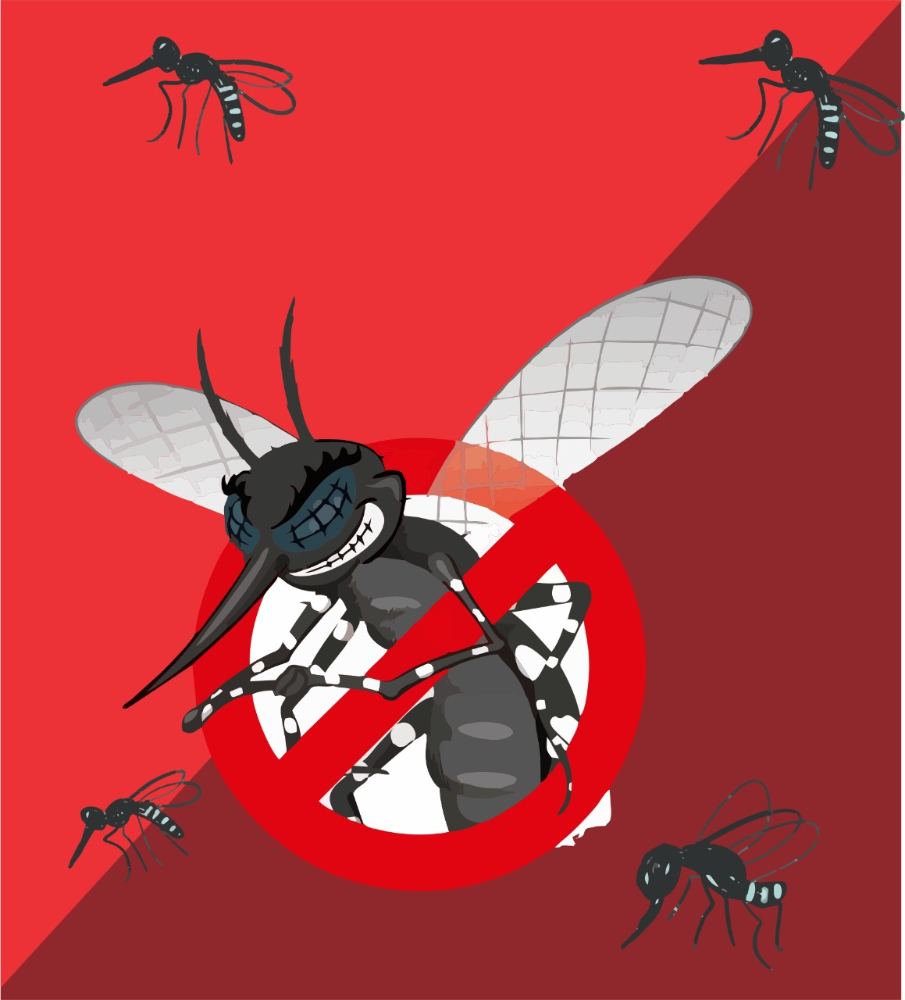

Dengue
O que é?
O que é a dengue? Trata-se de uma doença infecciosa causada por um vírus transmitido pelo mosquito Aedes aegypti. Ela não tem tratamento específico, causa sintomas como febre alta e dores no corpo epode até matar. Sua incidência aumenta no verão, em dias quentes e úmidos.
O mosquito também é responsável pela transmissão de outros vírus como: chikungunya, febre amarela e zika.
O vírus que provoca essa doença pertence ao grupo dos arbovírus, que são passados por picadas de insetos, principalmente mosquitos. Existem quatro tipos de vírus da dengue.
“Portanto, é possível ser infectado até quatro vezes”, explica a infectologista Melissa Barreto Falcão, da Sociedade Brasileira de Infectologia (SBI). “Após a infecção, o corpo fica permanentemente imune contra o sorotipo que o atacou”, completa.
Quais os sintomas?
Após a picada do mosquito Aedes aegypti os primeiros sintomas podem surgir de forma leve em alguns casos, mas também podem ser bem intensos e incômodos.
Na maioria dos casos, o infectado pode até mesmo ter efeitos assintomáticos, ou seja, não sentir nenhum indício de que possa estar com a doença.
Porém, para os que apresentam sintomas, a dengue pode se manifestar de duas principais maneiras:
Dengue Clássica
É a forma de manifestação mais comum, é uma doença mais leve podendo ser até confundida com gripe.
Os sintomas podem permanecer na pessoa de 5 a 7 dias, apresentando sinais como:
- Dor de cabeça
- Febre (39º a 40ºC)
- Cansaço
- Indisposição
Dengue Hemorrágica
Essa variação ocorre quando a pessoa já está tendo a doença pela segunda ou terceira vez.
Por isso, sucede com menos frequência, mas com maior impacto.
Ela acontece quando a pessoa infectada sofre mudanças na coagulação do sangue, podendo levar, se não tratada, ao óbito.
No princípio, os sintomas podem ser muito parecidos com a dengue clássica, porém, a partir do terceiro dia surgem hemorragias.
Como prevenir?
A prevenção da dengue pode ser a partir da proteção do corpo contra a picada do mosquito ou pelo cuidado contra a proliferação do inseto.
No primeiro caso, existe a vacina contra o vírus.
No segundo, está tudo aquilo que as campanhas já nos falam.
A começar pelo cuidado com água parada em pneus velhos, vasos de plantas e garrafas abertas.
Outro aspecto importante é cuidar das poças em calhas e caixas d’águas a céu aberto, local muito propenso a ser um criadouro do mosquito.
Por fim, é indicado o uso de repelente e telas nas janelas para evitar o contato com o mosquito.
Como tratar?
Após começar a sentir e identificar quais os sintomas da dengue, a pessoa deve recorrer a um médico, principalmente especialistas como clínicos gerais ou infectologistas.
Assim, o profissional irá diagnosticar a partir de exames se o paciente foi infectado pelo vírus ou não.
Se confirmado, começa-se um tratamento sintomático, ou seja, tratamento dos sintomas.
Além dos medicamentos receitados, é importante também o infectado se manter hidratado bebendo muito líquido.
Caso persista a febre e demais dores, é indicado que a pessoa infectada recorra a um medicamento antitérmico.
A dengue é uma doença que tem sintomas relevantes e que podem durar alguns dias. Porém, no caso da clássica, é de fácil tratamento e dificilmente leva à morte.
Ainda assim, o cuidado deve ser constante ao ser diagnosticado, estando atento a sangramentos que podem mostrar que é um caso de dengue hemorrágica.
Quais as estatísticas de casos?
Borborema
| 2020 | |||
|---|---|---|---|
| Notifições | Casos positivos | Casos negativos | Casos Aguardando/ Sem resultado |
| 482 | 138 | 341 | 3 |
| 01/01/21-29/09/21 | |||
| Notifições | Casos positivos | Casos negativos | Casos Aguardando/ Sem resultado |
| 82 | 21 | 52 | 9 |
Novo Horizonte
| 2020 | |||
|---|---|---|---|
| Notifições | Casos positivos | Casos negativos | Casos Aguardando/ Sem resultado |
| 482 | 138 | 341 | 3 |
| 01/01/21-10/09/21 | |||
| Notifições | Casos positivos | Casos negativos | Casos Aguardando/ Sem resultado |
| 1040 | 615 | 423 | 0 |
Rio Preto
| 2020 | |||
|---|---|---|---|
| Notifições | Casos positivos | Casos negativos | Casos Aguardando/ Sem resultado |
| 11542 | 7252 | 4290 | 0 |
| 01/01/21-30/09/21 | |||
| Notifições | Casos positivos | Casos negativos | Casos Aguardando/ Sem resultado |
| 29648 | 19869 | 9434 | 345 |